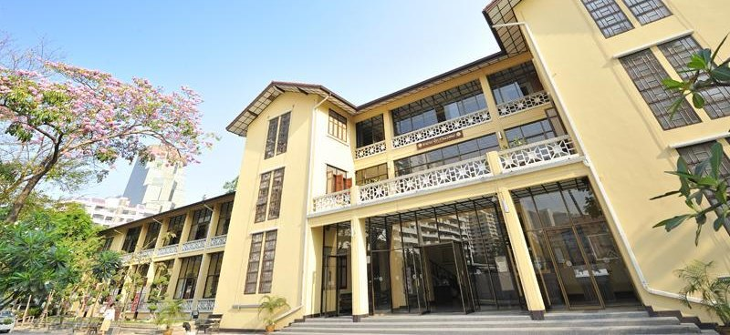

About Us
Our Story เรื่องราวของเรา
จากรากฐานแห่งการเรียนรู้ สู่การสร้างคุณค่าเพื่อสังคมอย่างยั่งยืน
กว่า 5 ทศวรรษแห่งการพัฒนาศาสตร์บริหารธุรกิจ บนความเชื่อที่ว่าความสำเร็จทางธุรกิจควรเติบโตควบคู่กับความรับผิดชอบต่อสังคม

ภาควิชาบริหารธุรกิจเดิม
จุดเริ่มต้นของความมุ่งมั่น
เรื่องราวของคณะบริหารธุรกิจเพื่อสังคม มหาวิทยาลัยศรีนครินทรวิโรฒ เริ่มต้นขึ้นในปี พ.ศ. 2516 จากการจัดตั้งภาควิชาบริหารธุรกิจ ภายใต้คณะสังคมศาสตร์ มหาวิทยาลัยศรีนครินทรวิโรฒ ด้วยวิสัยทัศน์ในการพัฒนาการศึกษาด้านธุรกิจให้ก้าวทันการเปลี่ยนแปลงของเศรษฐกิจและสังคม โดยมีการเตรียมความพร้อมด้านบุคลากรและองค์ความรู้จากต่างประเทศ เพื่อวางรากฐานการจัดการเรียนการสอนด้านธุรกิจศึกษาอย่างเป็นระบบ ในปี พ.ศ. 2518 ภาควิชาได้เปิดการเรียนการสอนหลักสูตรการศึกษาบัณฑิต วิชาเอกธุรกิจศึกษา ด้านการตลาดและการบัญชี โดยเริ่มต้นจากคณาจารย์เพียง 7 คน ก่อนพัฒนาหลักสูตรอย่างต่อเนื่อง ทั้งด้านบริหารธุรกิจ การบัญชี การเงิน การจัดการ การท่องเที่ยวและการโรงแรม ตลอดจนขยายการจัดการศึกษาสู่ระดับบัณฑิตศึกษา
ตลอดระยะเวลาที่ผ่านมา ภาควิชาบริหารธุรกิจได้สั่งสมองค์ความรู้ ประสบการณ์ และความเชี่ยวชาญทางวิชาการ พร้อมผลิตบัณฑิตที่มีคุณภาพออกไปรับใช้สังคมและมีบทบาทสำคัญในองค์กรทั้งภาครัฐและภาคเอกชน จนกลายเป็นรากฐานที่มั่นคงของการพัฒนาคณะบริหารธุรกิจเพื่อสังคมในเวลาต่อมา
เมื่อศาสตร์บริหารธุรกิจพบกับความรับผิดชอบต่อสังคม
ท่ามกลางการเปลี่ยนแปลงของโลกธุรกิจที่ไม่ได้วัดความสำเร็จจากผลกำไรเพียงอย่างเดียว แต่ยังให้ความสำคัญกับผู้คน ชุมชน และสิ่งแวดล้อม ภาควิชาบริหารธุรกิจได้ตระหนักถึงความจำเป็นในการพัฒนาการศึกษาที่เชื่อมโยงความรู้ทางธุรกิจเข้ากับการสร้างประโยชน์ต่อส่วนรวม
แนวคิดกิจการเพื่อสังคม (Social Enterprise) จึงเข้ามามีบทบาทสำคัญในการกำหนดทิศทางการพัฒนา โดยมุ่งสร้างผู้ประกอบการและผู้นำธุรกิจที่สามารถบริหารจัดการองค์กรอย่างมีประสิทธิภาพ ควบคู่กับการสร้างคุณค่าทางเศรษฐกิจ สังคม และสิ่งแวดล้อม ภายใต้แนวคิด Triple Bottom Line
ในปี พ.ศ. 2555 มหาวิทยาลัยได้กำหนดนโยบายส่งเสริมการจัดการศึกษาด้านกิจการเพื่อสังคม และต่อมาในปี พ.ศ. 2559 ได้เปิดการเรียนการสอนหลักสูตรบริหารธุรกิจบัณฑิต สาขาวิชาธุรกิจเพื่อสังคม ซึ่งนับเป็นก้าวสำคัญในการพัฒนาอัตลักษณ์ทางวิชาการที่แตกต่าง และสะท้อนความมุ่งมั่นในการใช้ศาสตร์บริหารธุรกิจเป็นเครื่องมือขับเคลื่อนการเปลี่ยนแปลงเชิงบวกให้แก่สังคม
ก้าวสำคัญสู่การเป็นคณะบริหารธุรกิจเพื่อสังคม
ด้วยความพร้อมทั้งด้านบุคลากร หลักสูตร งานวิจัย และเครือข่ายความร่วมมือ ประกอบกับความมุ่งมั่นในการยกระดับคุณภาพการศึกษาด้านบริหารธุรกิจสู่มาตรฐานสากล มหาวิทยาลัยศรีนครินทรวิโรฒจึงได้ยกระดับภาควิชาบริหารธุรกิจขึ้นเป็น “คณะบริหารธุรกิจเพื่อสังคม” ตามประกาศมหาวิทยาลัยลงวันที่ 6 ธันวาคม พ.ศ. 2560 และประกาศในราชกิจจานุเบกษาเมื่อวันที่ 26 มกราคม พ.ศ. 2561
การจัดตั้งคณะในครั้งนี้ มิได้เป็นเพียงการเปลี่ยนแปลงโครงสร้างองค์กร หากแต่เป็นการประกาศเจตนารมณ์ในการพัฒนาสถาบันการศึกษาด้านบริหารธุรกิจที่มีอัตลักษณ์โดดเด่น โดยผสานความเป็นเลิศทางวิชาการเข้ากับความรับผิดชอบต่อสังคม เพื่อผลิตบัณฑิตที่มีทั้งความรู้ ความสามารถ คุณธรรม จริยธรรม และจิตสำนึกในการสร้างประโยชน์ต่อส่วนรวม
นับจากวันนั้น คณะบริหารธุรกิจเพื่อสังคมได้เดินหน้าพัฒนาการจัดการศึกษาอย่างต่อเนื่อง ทั้งในระดับปริญญาตรี ปริญญาโท และปริญญาเอก พร้อมส่งเสริมการเรียนรู้ผ่านประสบการณ์จริง การวิจัย การบริการวิชาการ และการสร้างเครือข่ายความร่วมมือกับภาคธุรกิจและชุมชน เพื่อเชื่อมโยงองค์ความรู้สู่การสร้างผลกระทบเชิงบวกอย่างเป็นรูปธรรม
ก้าวสู่อนาคตด้วยคุณภาพและมาตรฐานสากล
การเปิดการเรียนการสอนระดับปริญญาเอกด้านบริหารธุรกิจเพื่อสังคมในปีการศึกษา 2566 ถือเป็นอีกหนึ่งหมุดหมายสำคัญของการพัฒนาคณะ สะท้อนถึงศักยภาพในการสร้างองค์ความรู้ขั้นสูงและพัฒนานักวิชาการ ตลอดจนผู้นำทางธุรกิจที่สามารถตอบสนองต่อความท้าทายของสังคมยุคใหม่
ขณะเดียวกัน คณะได้ให้ความสำคัญกับการพัฒนาคุณภาพการศึกษาและการยกระดับมาตรฐานทางวิชาการสู่ระดับนานาชาติ โดยเข้าร่วมเป็นสมาชิกของ Association to Advance Collegiate Schools of Business (AACSB) พร้อมส่งเสริมการพัฒนาสมรรถนะของคณาจารย์และบุคลากร ตลอดจนการจัดการเรียนรู้ที่มุ่งเน้นผู้เรียนเป็นสำคัญ
วันนี้ คณะบริหารธุรกิจเพื่อสังคมยังคงเดินหน้าบนรากฐานแห่งความภาคภูมิใจที่สั่งสมมากว่าครึ่งศตวรรษ พร้อมเปิดรับความเปลี่ยนแปลงและโอกาสใหม่ของโลกธุรกิจ ด้วยความเชื่อมั่นว่า การศึกษาที่มีคุณภาพไม่เพียงสร้างคนให้ประสบความสำเร็จ แต่ต้องสร้างคนที่สามารถนำความสำเร็จนั้นกลับมาสร้างคุณค่าให้แก่ผู้อื่นและสังคมได้อย่างยั่งยืน
นี่คือเรื่องราวของเรา จากจุดเริ่มต้นของภาควิชาบริหารธุรกิจ สู่การเป็นคณะบริหารธุรกิจเพื่อสังคม ที่มุ่งมั่นพัฒนาผู้นำแห่งอนาคต และร่วมสร้างสังคมที่ดีกว่าไปด้วยกัน